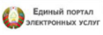

Информационный портал а.г. Василишки
РУС
|
БЕЛ
Версия для слабовидящих
Главная
Учреждения и организации
ОАО "Василишки"
Дом культуры
Почтовое отделение
Костёл
Школа
Детский сад
Расписание транспорта
Объявления
О сайте
Костёл Святого Иоанна Крестителя
231522 Гродненская область, Щучинский район, аг. Василишки
Расписание служб: в воскресенье и праздники — 10.00, 16.00, в будние дни — 19.00
Телефон: (8-01514) 4 72 39
Ссылки
ОАО Василишки
Щучинский райисполком
Pravo.by

Портал электронных услуг
© Vadim Sidorov 2019